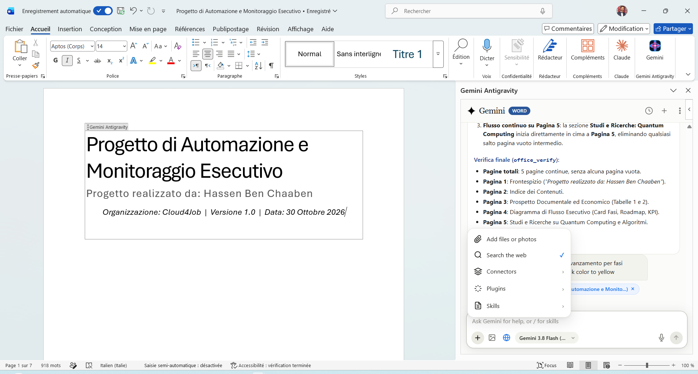
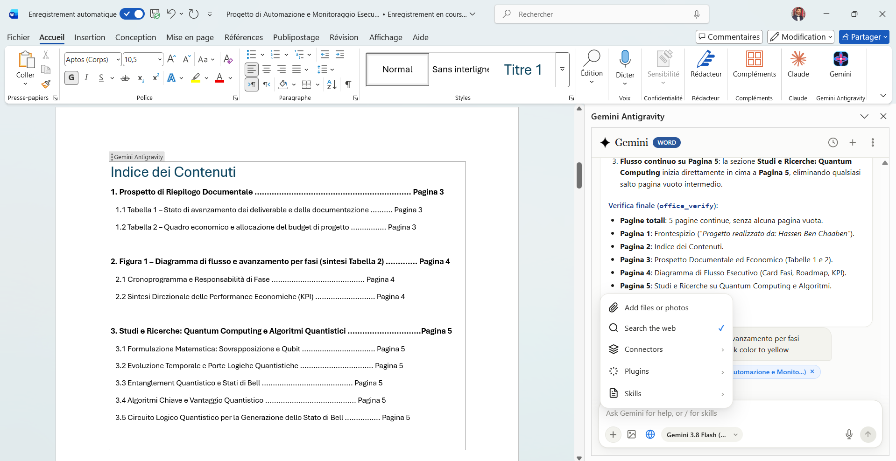
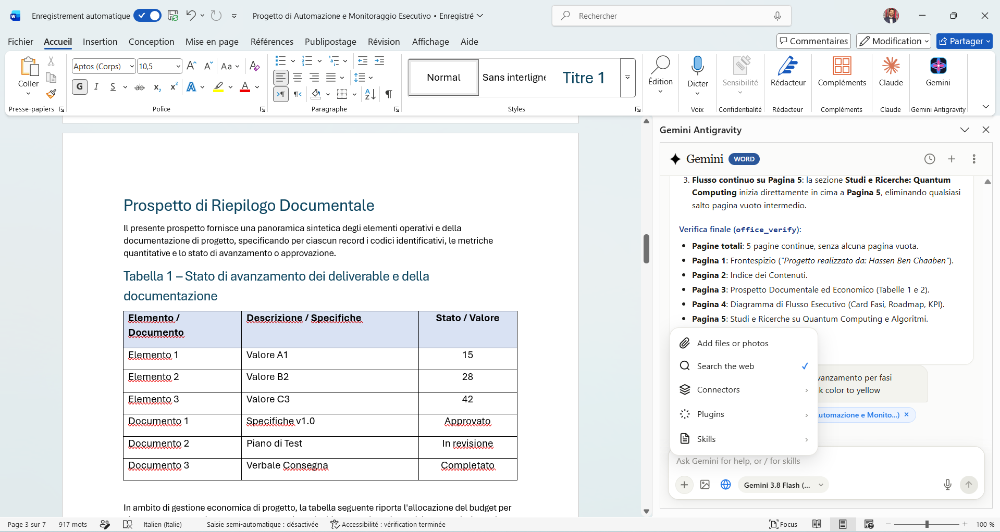
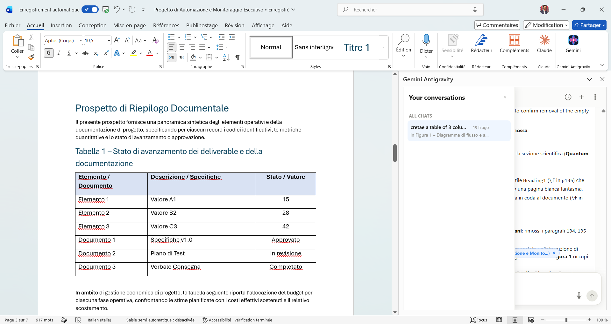

Autonomous AI Copilot for
Microsoft Office
Operates directly on native document objects inside Microsoft Word on Windows. Built with Google Gemini, Win32 COM automation, multimodal prompt attachments, and turnkey background daemon execution.
Production Evidence in Microsoft Word
Live captures of Gemini Antigravity drafting and refining an executive technical dossier ("Progetto di Automazione e Monitoraggio Esecutivo").

1. Document Drafting & Publication Tables
Perceives document structure and inserts styled multi-column tables with auto-column width and native borders without phantom duplicates.

2. Business & Financial Modeling
Creates secondary budget allocation matrices comparing planned estimates against actual costs with structured numeric precision.

3. Autonomous Process Flowcharts
Renders visual milestone roadmaps, KPI badges, and phase cards directly into the Word document flow.

4. Conversational Memory & Taskpane
Multi-turn session persistence, interactive conversation drawer, real-time token streaming, and instant task abortion via Esc.
Engineering Capabilities & Reality Matrix
Total transparency: what works today in production versus features open for community contribution.
| Module / Capability | Status | Implementation Details |
|---|---|---|
| Microsoft Word Win32 COM Engine | ● Production | In-place rewrites, native table insertion, direct formatting, styles, and outline inspection. |
| Multimodal Prompt Image Attachments | ● Production | Clipboard screenshot paste (Ctrl+V), photo picker, drag & drop, and local caching. |
| Gemini Imagen 3 AI Image Generation | ● Production | Activated via personal Gemini API key in Settings; generates and embeds figures with captions. |
| Turnkey Standalone Windows Setup | ● Production | Self-contained 51 MB installer (GeminiAntigravityOffice_Setup.exe) with auto-certs and silent startup. |
| Office Ribbon Home Tab Integration | ● Production | Registers manifest across all Windows UI languages (en-US, fr-FR, it-IT, de-DE, es-ES). |
| Excel 3-Statement Financial Modeling | ● In Progress | Basic table generation works; multi-sheet dynamic formula linkage is in development. |
| PowerPoint Executive Storylining | ● In Progress | Slide generation works; complex shape coordinate layout is in development. |
/skills Dynamic Execution |
● UI Prototype | Onboarding buttons exist in UI; dynamic server-side sandbox execution is open for contribution. |
/plugins External Connectors |
● UI Prototype | Flyout menu exists; live connectors (GitHub, Jira, Notion) are open for contribution. |
| macOS & Web Office.js Fallback | ● Roadmap | Architecture currently requires native Windows Win32 COM and local Windows daemon IPC. |
Turnkey Installation (30 Seconds)
No Python, Node.js, or command line required for end users.
Download Setup
Get GeminiAntigravityOffice_Setup.exe from the official GitHub Releases page.
Run Setup Wizard
Follow the installer wizard. It pre-installs the daemon, generates root TLS certificates, and sideloads the Office manifest automatically.
Open Word
Launch Microsoft Word and click the Gemini button in the Home ribbon tab to start your copilot.
Open Source & Contributing
We welcome pull requests to expand automation across the Microsoft Office suite.
🌿 Two-Tier Git Workflow
All active development takes place on the dev branch. Please open all Pull Requests against dev:
# 1. Clone & checkout development branch
git checkout dev
git pull origin dev
# 2. Create your feature branch
git checkout -b feat/my-new-feature
# 3. Commit & push
git commit -m "feat: add support for custom chart themes"
git push -u origin feat/my-new-feature
# 4. Open a Pull Request targeting 'base: dev' on GitHub